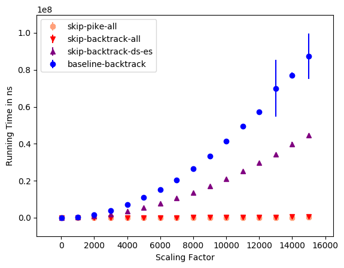
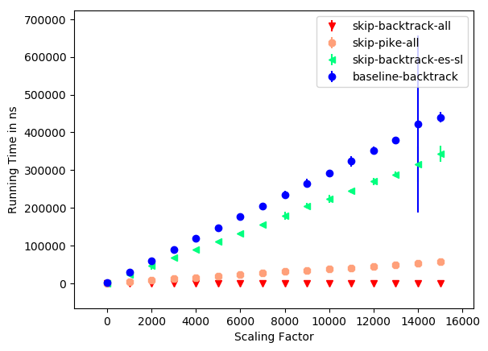
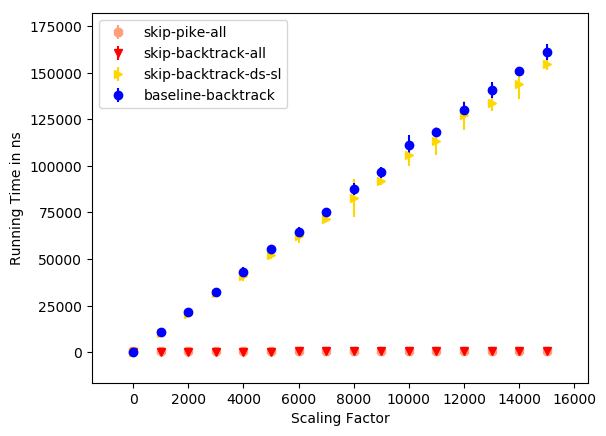
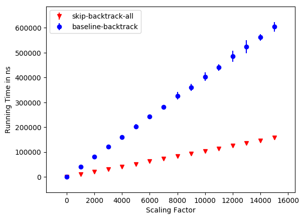
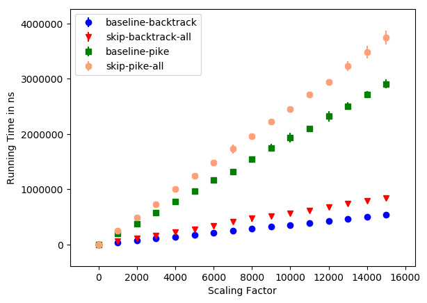

Skip Regex: Parsing without Deciding
Ethan PailesTalk Roadmap
- The Problem: Partial Parsing
- NFA Simulation Background
- Optimizations
- NFA Simulation Backends
- Evaluation
- Wrap Up
Motivation
Parsing Just Enough
BEGIN:VCARD VERSION:3.0 N:Gump;Forrest;;Mr.; FN:Forrest Gump ORG:Bubba Gump Shrimp Co. TITLE:Shrimp Man PHOTO;VALUE=URI;TYPE=GIF: ... TEL;TYPE=WORK,VOICE: (111) 555-1212 TEL;TYPE=HOME,VOICE: (404) 555-1212 ... EMAIL:forrestgump@example.com REV:2008-04-24T19:52:43Z END:VCARD
Partial Parsing is Impossible
Partial Parsing is Possible*
*: The Partial Parsing Assumption
Given a grammar, g, a subset, s, of g to extract and an input in the language of g, a partial parse extracts the part of the input corresponding to s.
Partially Parsing Regex
- Constrained Semantics
- A Strict Subset of PADS
- Built-In Notion of a Partial Parse
- Friendly Performance Quirks
Built-In Partial Parse
/a*(c{1,3})x$/
aaaaaaccx
Friendly Performance Quirks
- DFAs can't easily perform submatch extraction.
- NFAs Simulation << DFA Execution << Substring Search
Optimization Goals
- Find places to skip.
- Find places to scan.
Background
- Non-deterministic Finite Automata
- Virtual Machines
- Compiling Regex
Non-Deterministic Finite Automata
NFA VMs
save 0 L1: char 'a' split L1 L2 L2: char 'b' save 1 match
save n |
Save the current string index in slot n. |
char a |
Kill thread if input[string index] is not in a. |
jmp L |
Goto label L. |
split L1 L2 |
Goto L1, spawn a new thread at L2. |
match |
We made it! |
| code((e)) |
save n code(e) save (n+1) |
| code(e1 e2) |
code(e1) code(e2) |
| code(e1|e2) |
split L1 L2 L1: code(e1) jmp L3 L2: code(e2) L3: |
| code(a) |
char a |
| code(e*) |
split L1 L2 L1: code(e) split L1 L2 L2: |
| code(e+) |
L1: code(e) split L1 L2 L3: |
| code(.) |
char SIGMA |
code(a*b(c|d))
code(a*b(c|d))
code(a*b(c|d))
code(a*)
code(b(c|d))
code(a*b(c|d))
code(a*)
code(b)
code((c|d))
code(a*b(c|d))
split L1 L2
L1: code(a)
split L1 L2
L2:
code(b)
code((c|d))
code(a*b(c|d))
split L1 L2
L1: char a
split L1 L2
L2:
code(b)
code((c|d))
code(a*b(c|d))
split L1 L2
L1: char a
split L1 L2
L2:
char b
code((c|d))
code(a*b(c|d))
split L1 L2
L1: char a
split L1 L2
L2:
char b
save 2
code(c|d)
save 3
code(a*b(c|d))
split L1 L2 L1: char a split L1 L2 L2: char b save 2 split L3 L4 L3: code(c) jmp L5 L4: code(d) L5: save 3
code(a*b(c|d))
split L1 L2 L1: char a split L1 L2 L2: char b save 2 split L3 L4 L3: char c jmp L5 L4: char d L5: save 3
code(a*b(c|d))
save 0 split L1 L2 L1: char a split L1 L2 L2: char b save 2 split L3 L4 L3: char c jmp L5 L4: char d L5: save 3 save 1
Extension: Skip Instructions
skip n |
Skip forward in the input by n. |
scan-begin lit |
Scan forward to lit and stop at the beginning. |
scan-end lit |
Scan forward to lit and stop at the end. |
goto-end |
Just go to the end of the input. |
.*l Optimization
| Spawning threads is expensive |
split L1 L2 L1: char SIGMA split L1 L2 L2: char 'f' char 'o' char 'o' |
| Scanning forward is cheap | scan-end 'foo' |
Problem!
/.*foox+/
aaaaafooooooooofooxxxxx
L1: scan-end 'foo' split L1 L2 L2:
Literal Scan Optimization
/(?:we|are|having|a| )*blast/scan-end 'blast'
When is it okay to do this?
l ∉ L(/e/)
L(/e/) ∩ L(/.*l.*/) = ∅
L(/aa/) ∩ L(/ab/) ≟ ∅

L(/aa/) ∩ L(/ab/) ≟ ∅
L(/aa/) ∩ L(/ab/) ≟ ∅
L(/aa/) ∩ L(/ab/) ≟ ∅
L(/aa/) ∩ L(/ab/) ≟ ∅
L(/aa/) ∩ L(/ab/) ≟ ∅
L(/aa/) ∩ L(/ab/) ≟ ∅
L(/aa/) ∩ L(/ab/) ≟ ∅
L(/aa/) ∩ L(/a*/) ≟ ∅

L(/aa/) ∩ L(/a*/) ≟ ∅
Literal Skip Optimization
/foo/skip 3
What about |
/foo(.)|bar(.)/ barx
save 0 split L1 L2 L1: skip 3 save 2 skip 1 save 3 L2: ... save 1 matchcaptures[1] == x |
save 0 split L1 L2 L1: char 'f' ... L2: char 'b' skip 2 skip 3 save 4 skip 1 save 5 save 1 matchcaptures[2] == x |
What about *
e1*e2*...en*etermWhat if you can't tell with a char test?
apples|alexShort Digression: First Sets
| fset(a) | {a} |
| fset(e1|e2) | fset(e1) ∪ fset(e2) |
| fset(e*) | fset(e) |
| fset(.) | Σ |
| fset((e)) | fset(e) |
What if you can't tell with a char test?
apples|alexa(?:pples|lex)
A Backend: The Skip Backtracker
- One Copy of the Capture Slots
- Prevents Exponential Blowup with a Bitset
A Backend: The Skip Pike VM
- Sometimes faster when the regex and input are large.
- Can't handle greedy vs lazy disambiguation.
Micro Benchmarks
A Big Skip
/aaaa(bbbb)cccc/ aaaabbbbcccc
Leading .*
/.*(aaaa)/ baaaa
.* Bounce
/.*a(bbbb)/ cabbbbLeading e*
/a*foo(bar)/ afoobar
Leading el
/(a+).*/ ab
No Opt
/(ab|ac)*/ ab
Kafka Diagnostics: A Case Study
Summarizing Append Events
[2018-02-15 11:39:30,073] TRACE Appended message set to log test-0 with first offset: 1000, next offset: 1001, and messages: [(record=DefaultRecord(offset=1000, timestamp=-1, key=0 bytes, value=14 bytes))] (kafka.log.Log)
/^.* with first offset: ([0-9]+).*value=([0-9]+).*$/
Performance on 25M of Input
- 26.03% improvement in user time.
- Only 3.51% of lines matched
Performance on 848K of Matching Input

Summarizing Scheduled Tasks
[2018-02-15 11:39:25,728] TRACE Beginning execution
of scheduled task 'isr-expiration'. (kafka.utils.KafkaScheduler)
/.* scheduled task '(.+?)'.*/
Performance on 25M of Input
Joint Performance on 25M of Input
How often are these optimizations useful?
- 82.8% of crates.io regex could be optimized.
- 74.1% could have a skip.
- 15.0% could make use of a scan.
Future Work
- Formalize Correctness Proof.
- PADS integration.
- Add support for unicode and case folding.
- Cost Model.
Takeaways
- Current regex engines decide languages once too many times.
- Parsing need not include deciding.
- NFA Simulation << DFA << Substring Search